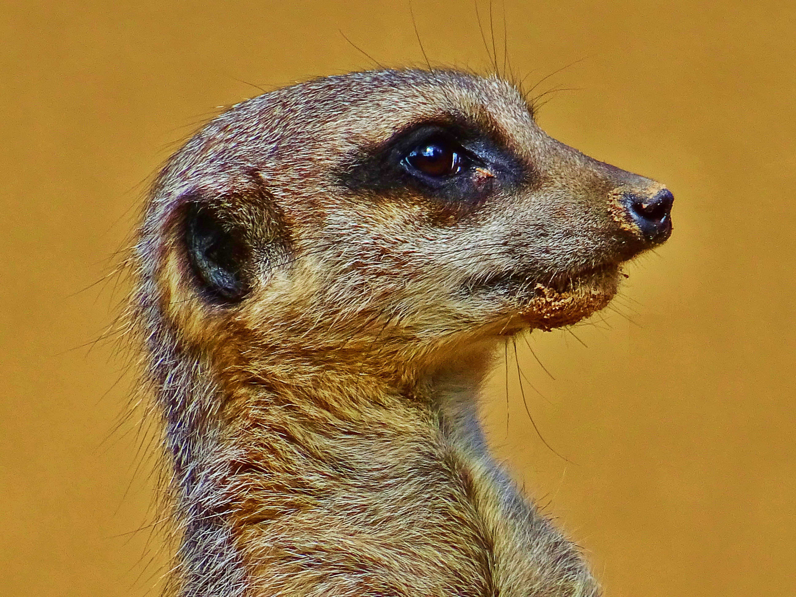

Meerkat
When tamed, Meerkats can be kept as pets to kill rodents.
- Scientific Name: Suricata suricatta
- Average Length: 29 centimeters
- Average Lifespan: 14 years
- Habitat: Dry, open plains, savannas, and grasslands
With its sentinel posture, strong, black eyes, small ears, tan colored fur, and long tail
meerkats are highly intelligent and tough animals.Meerkats live in dry, open lands and they
aren't required to drink water. They are also omnivores and hunt for insects such as, termites
and grubs.